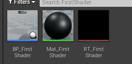

UE4渲染编程01_第一个Shader
Posted on 周一 07 十二月 2020 in Unreal Engine
[TOC]
创建一个UE4插件
我们的一些测试性开发可以以UE插件的形式进行，这样方便将我们的代码方便地导入其他工程。下面我们来新建一个插件专门用作Shader开发。
-
点击菜单栏Edit -> Plugins
-
在弹出框中点击右下方的绿色的New Plugin 按钮
-
选择创建一个空插件，输入插件名（我用的是ShaderTest），不要勾选引擎插件，点Create Plugin创建。成功后工程目录下Plugin/ShaderTest就是插件的根目录

-
关闭UE4 Editor
-
更改ShaderTest/Source/ShaderTest/ShaderTest.Build.cs中的如下内容：
```csharp PublicDependencyModuleNames.AddRange( new string[] { "Core", "CoreUObject", "Engine", "RHI", "Projects", "RenderCore", } );
PrivateDependencyModuleNames.AddRange( new string[] { "CoreUObject", "Engine", "Slate", "SlateCore", } ); ```
UE的各种功能都是由模块组成，大致结构如下：

C#文件用来描述这个模块的信息，Public存放对外接口，Private存放对内部实现。
如果在我们的插件中使用了某个函数的定义，却没有在.Build.cs*中声明对这个模块的依赖，那么在链接的时候就会报找不到外部符号**的错误。
- 更改ShaderTest/Source/ShaderTest/Private/ShaderTest.cpp
```cpp #include "ShaderTest.h" #include "Interfaces/IPluginManager.h"
void FShaderTestModule::StartupModule() { // This code will execute after your module is loaded into memory; the exact timing is specified in the .uplugin file per-module FString PluginShaderDir = FPaths::Combine(IPluginManager::Get().FindPlugin(TEXT("ShaderTest"))->GetBaseDir(), TEXT("Shaders")); AddShaderSourceDirectoryMapping(TEXT("/Plugin/ShaderTest"), PluginShaderDir); }
void FShaderTestModule::ShutdownModule() { // This function may be called during shutdown to clean up your module. For modules that support dynamic reloading, // we call this function before unloading the module. }
IMPLEMENT_MODULE(FShaderTestModule, ShaderTest) ```
AddShaderSourceDirectoryMapping是将一个真实的路径映射到虚拟的路径上来，UE内部加载编译Shader使用的都是虚拟路径。具体使用虚拟路径的方式可以参考ShaderCore.cpp中的GetShaderSourceFilePath函数。
- 将ShaderTest.uplugin中的LoadingPhase改为PostConfigInit：
这是因为在UE看来，所有的Shader都是一种预编译资源， 必须在加载资源前准备妥当。
添加Shader文件
- 在插件根目录下创建Shaders/Private目录，并在改目录下创建名为FirstShader.usf的文本文件，输入：
#include "/Engine/Public/Platform.ush"
void MainVS( in float4 InPosition : ATTRIBUTE0, out float4 OutPosition : SV_POSITION)
{
OutPosition = InPosition;
}
float4 SimpleColor;
void MainPS( out float4 OutColor : SV_Target0)
{
OutColor = SimpleColor;
}
这是一个简单的Shader，功能就是显示外部传入的颜色（SimpleColor）。
Shader对应的C++类
我们知道Shader是运行在GPU上的小程序，为了能在CPU上操作GPU上的Shader， UE4提供了三种管理Shader的C++类: FGlobalShader, FMaterialShader和FMeshMaterialShader。其中，GlobalShader全局只存在一份实例，所以它不需要与材质绑定，其他两种需要和材质绑定，每个材质可以有一个实例。我们使用GlobalShader来作为我们的第一个Shader。
- 在Source/Private下创建Common目录，用来保存一些公用的东西，在该目录下创建MyGlobalShaderBase.h**
#pragma once
#include "GlobalShader.h"
class FMyGlobalShaderBase : public FGlobalShader
{
public:
FMyGlobalShaderBase();
FMyGlobalShaderBase(const ShaderMetaType::CompiledShaderInitializerType& Initializer);
//是否编译着色器排列，具体信息后续章节说明
static bool ShouldCompilePermutation(const FGlobalShaderPermutationParameters& Parameters);
//自定义Shader中的环境变量
static void ModifyCompilationEnvironment(const FGlobalShaderPermutationParameters& Parameters,
FShaderCompilerEnvironment& OutEnvironment);
};
- 在Common目录下创建MyGlobalShaderBase.cpp
```cpp #include "Common/MyGlobalShaderBase.h"
FMyGlobalShaderBase::FMyGlobalShaderBase() {}
FMyGlobalShaderBase::FMyGlobalShaderBase(const ShaderMetaType::CompiledShaderInitializerType& Initializer) : FGlobalShader(Initializer) { }
bool FMyGlobalShaderBase::ShouldCompilePermutation(const FGlobalShaderPermutationParameters& Parameters) { return true; }
void FMyGlobalShaderBase::ModifyCompilationEnvironment(const FGlobalShaderPermutationParameters& Parameters, FShaderCompilerEnvironment& OutEnvironment) { FGlobalShader::ModifyCompilationEnvironment(Parameters, OutEnvironment); } ```
- 在Source/Private下创建FirstShader目录, 并在该目录下创建FirstShader.h。这个类就是真正操作我们Shader文件的类。
#pragma once
#include "Common/MyGlobalShaderBase.h"
//定点着色器，对应于HLSL中的MainVS
class FFirstShaderVS : public FMyGlobalShaderBase
{
//申明这个类会实例化出一个GlobalShader
DECLARE_SHADER_TYPE(FFirstShaderVS, Global);
public:
FFirstShaderVS() {}
FFirstShaderVS(const ShaderMetaType::CompiledShaderInitializerType& Initializer) : FMyGlobalShaderBase(Initializer){}
};
//像素着色器，对应于HLSL中的MainPS
class FFirstShaderPS : public FMyGlobalShaderBase
{
DECLARE_SHADER_TYPE(FFirstShaderPS, Global);
private:
//申明一个对应于Shader中的变量
LAYOUT_FIELD(FShaderParameter, SimpleColorVal);
public:
FFirstShaderPS() {}
FFirstShaderPS(const ShaderMetaType::CompiledShaderInitializerType& Initializer);
//外部设置SimgleColorVal的接口
void SetColor(FRHICommandListImmediate& RHICmdList, const FPixelShaderRHIRef ShaderRHI, const FLinearColor& MyColor);
};
- 在FirstShader目录下创建FirstShader.cpp
#include "FirstShader/FirstShader.h"
FFirstShaderPS::FFirstShaderPS(const ShaderMetaType::CompiledShaderInitializerType& Initializer)
: FMyGlobalShaderBase(Initializer)
{
//将变量SimpleColorVal绑定到HLSL Shader中的变量SimpleColor
SimpleColorVal.Bind(Initializer.ParameterMap, TEXT("SimpleColor"));
}
void FFirstShaderPS::SetColor(FRHICommandListImmediate& RHICmdList, const FPixelShaderRHIRef ShaderRHI, const FLinearColor& MyColor)
{
//设置变量值
SetShaderValue(RHICmdList, ShaderRHI, SimpleColorVal, MyColor);
}
//将C++定义的顶点着色器和像素着色器和HLSL定义的着色器绑定到一起
IMPLEMENT_SHADER_TYPE(, FFirstShaderVS, TEXT("/Plugin/ShaderTest/Private/FirstShader.usf"), TEXT("MainVS"), SF_Vertex)
IMPLEMENT_SHADER_TYPE(, FFirstShaderPS, TEXT("/Plugin/ShaderTest/Private/FirstShader.usf"), TEXT("MainPS"), SF_Pixel)
Shader对蓝图暴露的接口
- Source/Public下创建ShaderTestLibrary.h，它是蓝图使用Shader的接口：
```cpp #pragma once
/* * FisherShader对蓝图的接口 /
#include "Engine/TextureRenderTarget2D.h" #include "Kismet/BlueprintFunctionLibrary.h" #include "ShaderTestLibrary.generated.h"
UCLASS() class UShaderTestLibrary : public UBlueprintFunctionLibrary { GENERATED_BODY()
public: //将Shader的渲染结果输入到OutputRenderTarget， MyColor就是我们要设置的颜色 UFUNCTION(BlueprintCallable, Category = "ShaderTestPlugin") static void FirstShaderDrawRenderTarget(UTextureRenderTarget2D OutputRenderTarget, AActor Ac, FLinearColor MyColor); };
```
-
在ShaderTest/Private下创建FirstShader目录，在该目录下创建FirstShaderLibrary.cpp文件，用于实现10中结接口：
```cpp
include "ShaderTestLibrary.h"
include "FirstShader/FirstShader.h"
include "Common/TestShaderUtils.h"
//渲染线程 static void FirstShader_RenderThread( FRHICommandListImmediate& RHICmdList, FTextureRenderTargetResource* OutTextureRenderTargetResource, ERHIFeatureLevel::Type FeatureLevel, FName TextureRenderTargetName, FLinearColor MyColor ) { check(IsInRenderingThread());
FRHITexture2D* RenderTargetTexture = OutTextureRenderTargetResource->GetRenderTargetTexture(); //使用BeginRenderPass和EndRenderPass定义一个Pass FRHIRenderPassInfo RPInfo(RenderTargetTexture, ERenderTargetActions::DontLoad_Store, OutTextureRenderTargetResource->TextureRHI); RHICmdList.BeginRenderPass(RPInfo, TEXT("DrawTestShader")); //渲染分辨率 FIntPoint DrawTargetResolution(OutTextureRenderTargetResource->GetSizeX(), OutTextureRenderTargetResource->GetSizeY()); //视口 RHICmdList.SetViewport(0, 0, 0.0f, DrawTargetResolution.X, DrawTargetResolution.Y, 1.0f); //拿到我们定义的Global Shader FGlobalShaderMap* GlobalShaderMap = GetGlobalShaderMap(FeatureLevel); TShaderMapRef<FFirstShaderVS> VertexShader(GlobalShaderMap); TShaderMapRef<FFirstShaderPS> PixelShader(GlobalShaderMap); //设置渲染管线的一些参数 FGraphicsPipelineStateInitializer GraphicsPSOInit; RHICmdList.ApplyCachedRenderTargets(GraphicsPSOInit); GraphicsPSOInit.DepthStencilState = TStaticDepthStencilState<false, CF_Always>::GetRHI(); GraphicsPSOInit.BlendState = TStaticBlendState<>::GetRHI(); GraphicsPSOInit.RasterizerState = TStaticRasterizerState<>::GetRHI(); GraphicsPSOInit.PrimitiveType = PT_TriangleList; //画三角形 GraphicsPSOInit.BoundShaderState.VertexDeclarationRHI = GetVertexDeclarationFVector4(); //我们自定义的shader GraphicsPSOInit.BoundShaderState.VertexShaderRHI = VertexShader.GetVertexShader(); GraphicsPSOInit.BoundShaderState.PixelShaderRHI = PixelShader.GetPixelShader(); SetGraphicsPipelineState(RHICmdList, GraphicsPSOInit); //设置自定义的参数 PixelShader->SetColor(RHICmdList, PixelShader.GetPixelShader(), MyColor); //构造顶点数据 TArray<FVector4> VertexList; VertexList.Add(FVector4(-1.0f, 1.0f, 0, 1.0f)); VertexList.Add(FVector4(1.0f, 1.0f, 0, 1.0f)); VertexList.Add(FVector4(-1.0f, -1.0f, 0, 1.0f)); VertexList.Add(FVector4(1.0f, -1.0f, 0, 1.0f)); FRHIResourceCreateInfo CreateInfo; FVertexBufferRHIRef VertexBufferRHI = RHICreateVertexBuffer(sizeof(FVector4) * VertexList.Num(), BUF_Volatile, CreateInfo); void* VoidPtr = RHILockVertexBuffer(VertexBufferRHI, 0, sizeof(FVector4) * VertexList.Num(), RLM_WriteOnly); FVector4* Vertices = (FVector4*)VoidPtr; for (int i = 0; i < VertexList.Num(); i++) { Vertices[i] = VertexList[i]; } RHIUnlockVertexBuffer(VertexBufferRHI); //构造顶点索引 const uint16 Indices[] = { 0, 1, 2, 2, 1, 3 }; TResourceArray<uint16, INDEXBUFFER_ALIGNMENT> IndexBuffer; IndexBuffer.AddUninitialized(6); FMemory::Memcpy(IndexBuffer.GetData(), Indices, 6 * sizeof(uint16)); // Create index buffer. Fill buffer with initial data upon creation FRHIResourceCreateInfo CreateInfo(&IndexBuffer); FIndexBufferRHIRef IndexBufferRHI = RHICreateIndexBuffer(sizeof(uint16), IndexBuffer.GetResourceDataSize(), BUF_Static, CreateInfo); //根据顶点数据和索引数据画三角形 RHICmdList.SetStreamSource(0, VertexBufferRHI, 0); RHICmdList.DrawIndexedPrimitive(IndexBufferRHI, 0, 0, 4, 0, 2, 1); RHICmdList.EndRenderPass();}
void UShaderTestLibrary::FirstShaderDrawRenderTarget(UTextureRenderTarget2D OutputRenderTarget, AActor Ac, FLinearColor MyColor) { check(IsInGameThread());
if (!OutputRenderTarget) { return; } //设置一些参数，并将渲染线程函数加入渲染task列表 FTextureRenderTargetResource* TextureRenderTargetResource = OutputRenderTarget->GameThread_GetRenderTargetResource(); UWorld* World = Ac->GetWorld(); ERHIFeatureLevel::Type FeatureLevel = World->Scene->GetFeatureLevel(); FName TextureRenderTargetName = OutputRenderTarget->GetFName(); ENQUEUE_RENDER_COMMAND(CaptureCommand)( [TextureRenderTargetResource, FeatureLevel, MyColor, TextureRenderTargetName](FRHICommandListImmediate& RHICmdList) { FirstShader_RenderThread(RHICmdList, TextureRenderTargetResource, FeatureLevel, TextureRenderTargetName, MyColor); } );} ```
使用
-
在编辑器中创建三个资源，分别为Actor, Material, RenderTarget2D

-
打开Mat_FirstShader, 将RT_FirstShader拖进去，然后连线

-
打开BP_FirstShader， 创建一个Plane和TextRender

将Plane的材质设为Mat_FirstShader

打开BP_ShaderTest的输入：

在EventGraph中加入如下逻辑：
 4. 将BP_FirstShader拖入场景中，运行，可以看到面板的颜色随着按键123而切换。
4. 将BP_FirstShader拖入场景中，运行，可以看到面板的颜色随着按键123而切换。